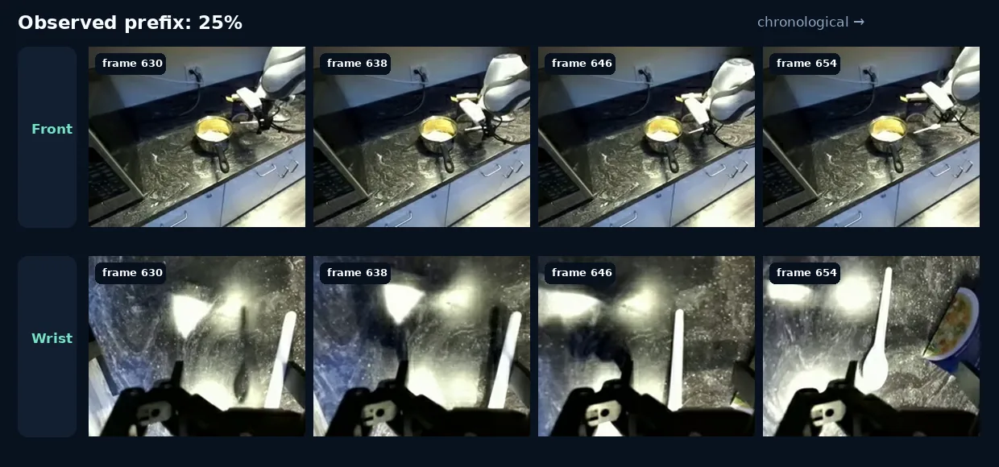
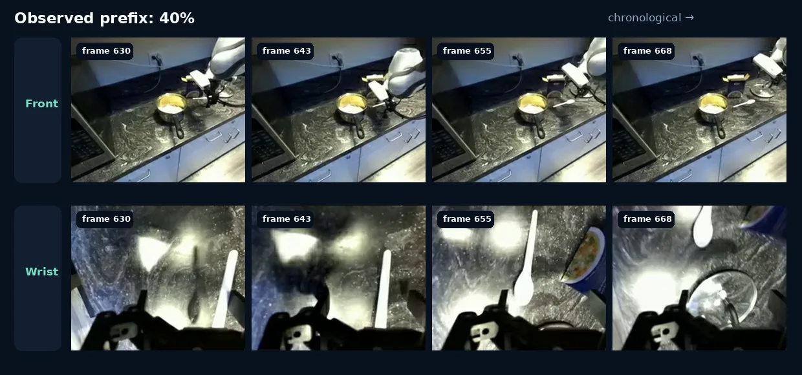
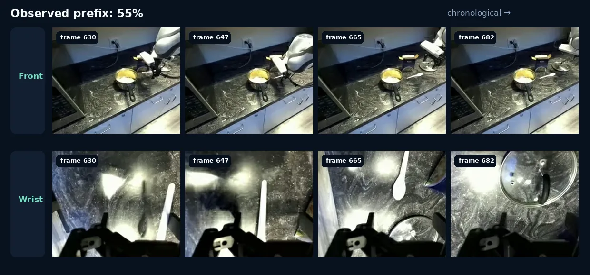
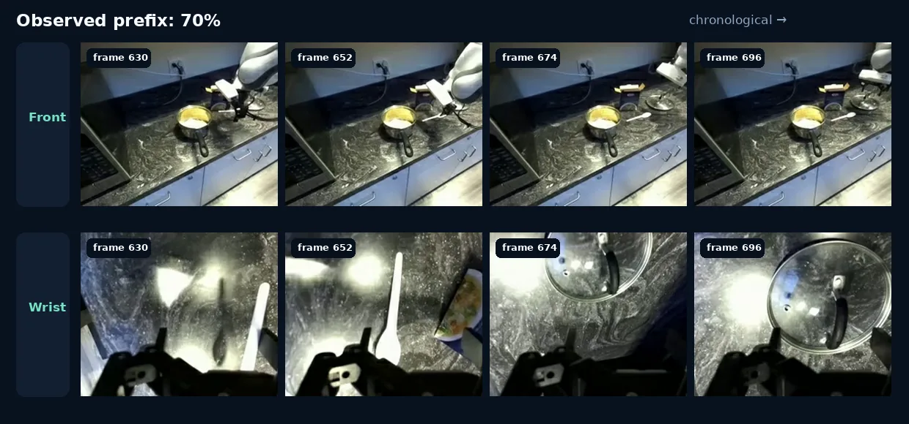
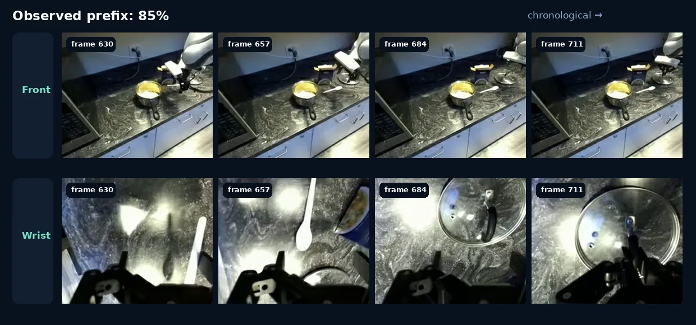
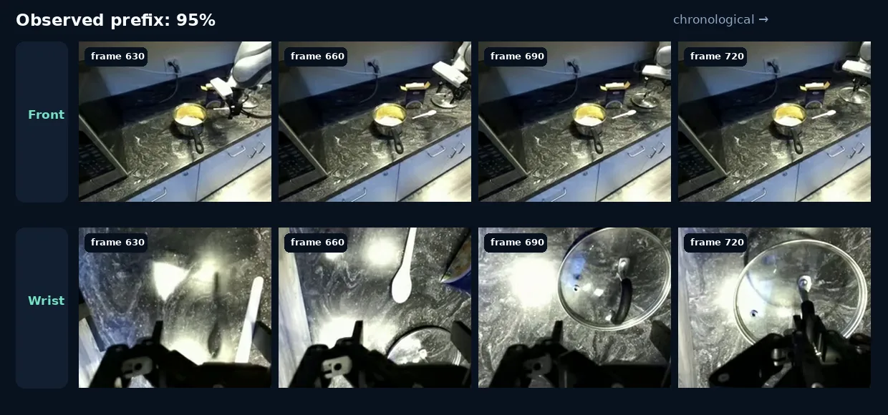

A controlled comparison of Qwen3.5-27B before and after intention fine-tuning, evaluated on the same episode-disjoint test cohort under fixed causal cutoffs and the exact train-aligned sampling plan.
Qwen3.5-27BHybrid front + wrist inputEpisode-disjoint test splitHigher is better
330held-out parent episodes
633atomic actions
3,798samples per condition
16model × format × protocol conditions
Two temporal sampling protocols
A · Fixed causal cutoffs
At 25%, 40%, 55%, 70%, 85%, and 95% of each atomic action, four chronological frames are sampled uniformly from the observed prefix. This directly measures anticipation as visual evidence accumulates.
B · Train-aligned SAMPLE_PLAN
The exact six training strategies are replayed with deterministic seeds: uniform, prefix-random 0.3/0.6/0.8, local, and irregular. Local and irregular have no single cutoff percentage, so they are reported as categorical strategies.
Main result
Fine-tuning improves every primary task under both sampling protocols.
Overall metrics
Primary component follows each task's intended evaluation object: action for OA-only, complete structured output for OA+OM and OA+future, and mission for OM-only.
SentenceBERT over temporal evidence
Each chart overlays Tuned and Base Qwen. Fixed-cutoff charts share the 25%–95% action-progress axis; train-aligned charts use the six named strategies.
Complete metric explorer
Inspect Exact Match, Token F1, SentenceBERT, sample count, and format-valid rate for every available component and evaluation slice.
A single action observed from 25% to 95%
DROID Obstacle Occlusion · Task 731 · Episode 1480 · Atomic 7. Each card contains four synchronized front/wrist pairs from the causal prefix. Predictions use the OA+OM protocol.
25%
Observed atomic-action prefix
frames 630 · 638 · 646 · 654

Ground truth
Ongoing action: pick up the glass lid Ongoing mission: cover the pot with the glass lid
Tuned · SBERT 0.6228
Ongoing action: pick up the spoon back Ongoing mission: put the spoon back in the sink
Base · SBERT 0.6284
Ongoing action: place the spoon on the counter Ongoing mission: put the spoon on the counter
40%
Observed atomic-action prefix
frames 630 · 643 · 655 · 668

Ground truth
Ongoing action: pick up the glass lid Ongoing mission: cover the pot with the glass lid
Tuned · SBERT 0.6228
Ongoing action: pick up the spoon back Ongoing mission: put the spoon back in the sink
Base · SBERT 0.6284
Ongoing action: place the spoon on the counter Ongoing mission: put the spoon on the counter
55%
Observed atomic-action prefix
frames 630 · 647 · 665 · 682

Ground truth
Ongoing action: pick up the glass lid Ongoing mission: cover the pot with the glass lid
Tuned · SBERT 0.6398
Ongoing action: pick up the spoon back Ongoing mission: put the spoon back in the silverware holder
Base · SBERT 0.6284
Ongoing action: place the spoon on the counter Ongoing mission: put the spoon on the counter
70%
Observed atomic-action prefix
frames 630 · 652 · 674 · 696

Ground truth
Ongoing action: pick up the glass lid Ongoing mission: cover the pot with the glass lid
Tuned · SBERT 0.9361
Ongoing action: pick up the lid Ongoing mission: cover the pot with the lid
Base · SBERT 0.8550
Ongoing action: place the lid on the pot Ongoing mission: cover the pot
85%
Observed atomic-action prefix
frames 630 · 657 · 684 · 711

Ground truth
Ongoing action: pick up the glass lid Ongoing mission: cover the pot with the glass lid
Tuned · SBERT 0.9361
Ongoing action: pick up the lid Ongoing mission: cover the pot with the lid
Base · SBERT 0.8936
Ongoing action: pick up the pot lid Ongoing mission: cover the pot
95%
Observed atomic-action prefix
frames 630 · 660 · 690 · 720

Ground truth
Ongoing action: pick up the glass lid Ongoing mission: cover the pot with the glass lid
Tuned · SBERT 0.9361
Ongoing action: pick up the lid Ongoing mission: cover the pot with the lid
Base · SBERT 0.8936
Ongoing action: pick up the pot lid Ongoing mission: cover the pot